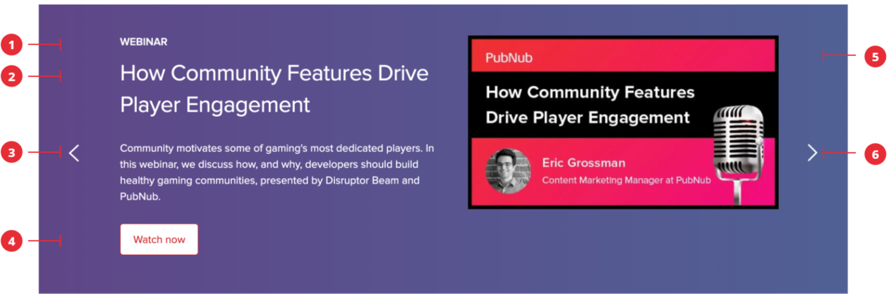

Carousel

Composition
The carousel section is made up of the following elements:
- Lead: Page title or it's category
- Title: Sentence case. The title for this feature provides a concise overview of the feature of this product/service.
- Message: The short summary of the feature.
- Button: Contains a maximum of two centered buttons. A primary action and secondary action. The action should be self-describing action verbs.
- Illustration: It should be composed of metaphorical imagery that relates to the content or benefit.
- Left and right arrows: for navigating though the content. Users should also be able to scroll using just the keyboard.
 design system
design system